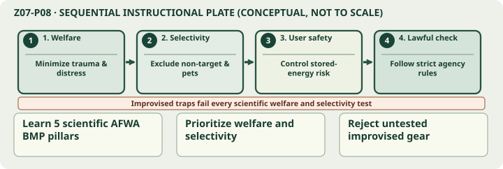

Z07-P08 · Traps and snares · New manuscript
AFWA Best Management Practices: Animal Welfare and Selectivity
Explain the scientific animal-welfare and selectivity criteria established by the Association of Fish & Wildlife Agencies (AFWA).
When it applies · Understanding modern regulated wildlife-management welfare standards.
Equipment · AFWA Best Management Practices reference.

Actions
- Understand that AFWA Best Management Practices evaluate regulated capture devices scientifically across five criteria: animal welfare, efficiency, selectivity, user safety, and practicality.[L02]
- Recognize that selectivity—excluding non-target wildlife, protected species, and domestic pets—and rapid minimization of pain or injury are core scientific standards in regulated management.[L02, L04]
- Use AFWA welfare principles to understand why unregulated, homemade, or modified devices fail ethical and legal scrutiny.[L02, L11]
Failure recognition · Equating historical folklore contraptions with scientifically evaluated wildlife-management tools ignores severe animal-suffering and non-target hazards.[L02, L11]
Verify · Discussions of trapping principles cite AFWA welfare and selectivity criteria clearly without providing build instructions.[L02, L11]
Stop or change course · Stop treating any unvalidated homemade capture device as humane, selective, or lawful.[L02, L11]
Evidence and editorial notes
- L02 · Association of Fish & Wildlife Agencies · Best Management Practices for Trapping and Furbearer Welfare (Current web edition)
- Section: AFWA Best Management Practices for animal welfare and selectivity · Conditions: Evaluating trapping principles, welfare, and non-target risk
Support: AFWA BMPs evaluate regulated devices on animal welfare, efficiency, selectivity, user safety, and practicality through scientific testing.
Limitations: Improvised traps and snares lack scientific welfare testing and selectivity controls, causing severe injury and non-target capture. · Conflicting evidence: None noted.
Editorial note: Anchors Z07 welfare & conceptual classification without building instructions. · Specialist reviewer: Wildlife welfare scientist
Primary source · checked 2026-11-25 - L04 · Minnesota DNR · Minnesota Endangered, Threatened, and Special Concern Species (Current web edition)
- Section: State endangered, threatened, and special-concern species · Conditions: Habitats supporting state-listed mammals, birds, reptiles, and amphibians
Support: Unselective devices endanger state-listed species including raptors, mustelids, and turtles.
Limitations: Verify protected-species distribution and never disturb protected habitats or dens. · Conflicting evidence: None noted.
Editorial note: Protects state-listed nongame species. · Specialist reviewer: Conservation biologist
Primary source · checked 2026-11-25 - L11 · Association of Fish & Wildlife Agencies · Best Management Practices for Trapping and Furbearer Welfare (Current web edition)
- Section: Conceptual classification of historic vs regulated capture categories · Conditions: Educational overview of mechanical hazard types without construction specs
Support: Historical and regulated devices fall into restraining (foothold, cage, cable restraint) and killing (body-grip) hazard classes with distinct spring-energy risks.
Limitations: Conceptual awareness supports hazard recognition only and must never include trigger dimensions, wire specs, or placement instructions. · Conflicting evidence: None noted.
Editorial note: Enforces Z07 no-actionable-construction editorial boundary. · Specialist reviewer: Safety and wildlife ethics reviewer
Primary source · checked 2026-11-25
Source lineage · New manuscript (Z07 P18 animal welfare) · Classification · New manuscript.